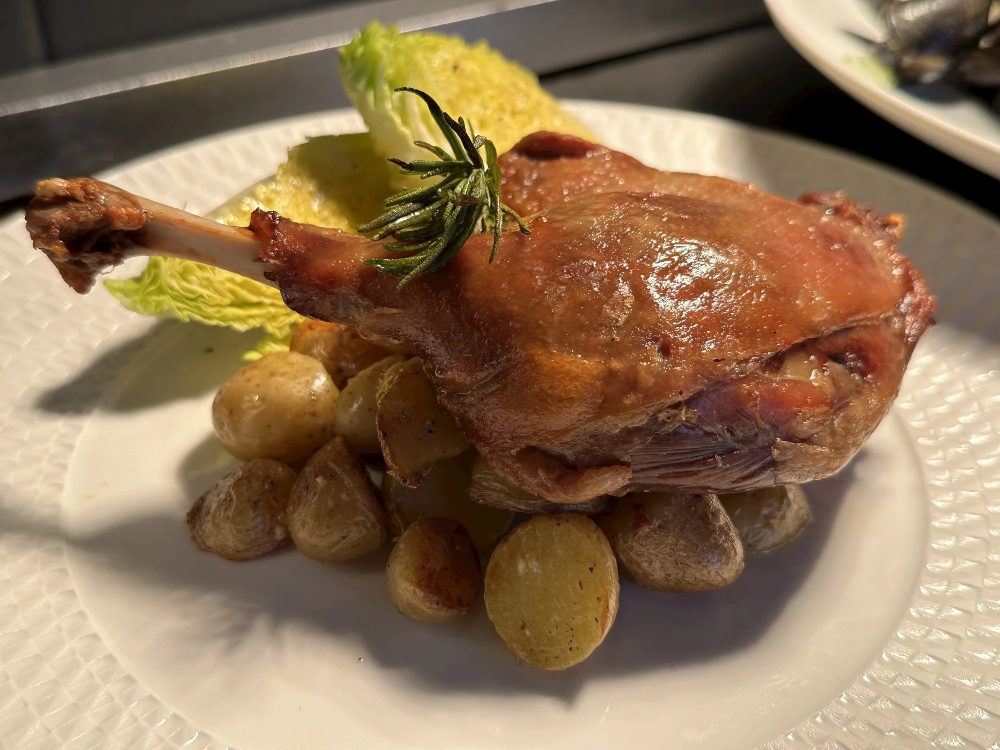

MittagessenLunch
VOLKVOLK
Brunnenstraße 182, Mitte. Austernbar und Bistro – französisch inspiriert, täglich wechselnde Karte, Szene-Kiez statt Touristenfallen.Brunnenstraße 182, Mitte. Oyster bar and bistro – French-inspired daily menu, neighbourhood scene not a tourist trap.
Website des BetreibersVenue website →